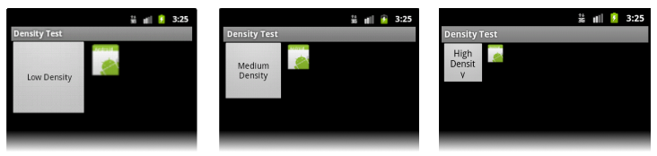
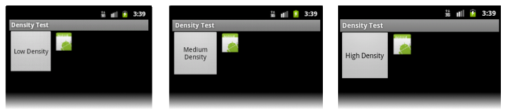

Android
Och mobil utveckling
Idag
Responsivitet
Android?
App-struktur
Gå igenom idag.
Responsivitet
Progressive enhancement
Ganska välanvänt begrepp – kan betyda flera saker. Coolt sedan 2011. En lösning för att lösa problemet att skapa system för flera olika enheter.
Android, Augusti 2012
Källa
Responsivitet är viktigt. Inte minst i Android-världen.
HTML & CSS
Media queries
@media (max-width: 320px) {
/* ... massa kod här! */
}
@media (min-width: 700px) and (orientation: landscape) {
/* ... massa kod här! */
}
Mer info!
Styra när din CSS-kod gäller.
@media (max-width: 700px) {
.column {
clear: both;
}
}
Exempel med kolumn-system. "Gridsystem"
Olika verktyg
Men, ingen ide att uppfinna hjulet på nytt. Finns många bra verktyg, som alla har liknande lösningar på samma system.
Android?
Innan vi snackar om responsivitet i Android så tänker jag att vi ska prata lite om Android i helhet, så att vi alla är på samma plan och så att vi alla snackar om samma sak.
Mobilt operativsystem
1 miljard aktiva enheter
1 miljon appar, 50 miljarder nedladdningar
Java
Gratis att komma igång med!
Google skött huvudsaklig utveckling sedan 2005.
App-struktur
Innan responsivitet också lite om hur en app är upplagd. Det är ett ganska omfattande system, och vi hinner bara skrapa lite på ytan. Men detta i kombination med labben kommer ge er tillräckligt mycket för att komma igång med det.
AndroidManifest.xml
res/
layout/drawable/values/
src/
En ny, tom, app har ungefär den här strukturen.
Styr appen intern och externt.
Fil direkt i roten, alltså högst upp i hiearkin, måste finnas med rätt namn.
Bilder, ljud, vyer, mm.
Resurser och tillgångar till appen.
Exempel på hiearki. Bilder hör hemma i drawable-mappen, vyer i layout och i values går det att spara saker som textsträngar, stiler osv
Qualifiers
drawable/drawable-hdpi/drawable-ldpi/layout/layout-sw600dp /values/values-swevalues-fr-rBEvalues-en-hdpi
Exempel på hur det kan se ut med flera olika inställningar.
Dåligt

Bra!

Exempel bra/dåligt. Förklara diff. Hämtat från guiden.
// Ladda in bakgrund för skärmen från en drawable resource
getWindow().setBackgroundDrawableResource(R.drawable.my_background_image);
// Ladda in vyn main_screen
setContentView(R.layout.main_screen);
drawable/my_background_image.png drawable-ldpi/my_background_image.png drawable-hdpi/my_background_image.png drawable-xhdpi/my_background_image.png
layout/main_screen.xml layout-sw600dp/main_screen.xml
Layouter för appen – XML.